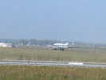
Première rencontre outdoor 2009 en France. Départ donc pour Coulaines, en grande banlieue du Mans. Je passe près d'Evreux et le noeud d'autoroute me permet d'admirer le Bréguet Deux-Ponts (1953-1972), le premier jumbo-hélice, le seul avion de transport au monde qui n'ait eu aucun crash, ni fait aucune victime !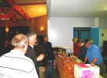
Vendredi, après une petite participation à l'accrochage du dragon au plafond, petit pot, puis petit dîner pour les volontaires...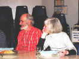
Début de la saison, je vais vous rappeler des visages, comme ici Gaby et Josette.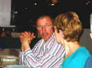
Et Jean-Marc, qui écoute (pour une fois...), la charmante épouse de Joël Goupil...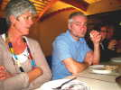
Et puis Niekol (notez bien l'orthographe, je ne le répèterai pas) et Mark, venus d'Anvers avec leurs éoliennes rapides !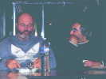
Bruno Claes, le grand spécialiste du Tom-Tom et des cerfs-volants à étoile verte et blanche discute avec Jean-Claude, le GO.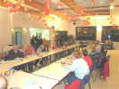
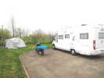
Michel est arrivé de Paris sur son MBK, limité à 45 km/h. Il roule à 50, mais ne le répétez pas ! Il ne reviendra pas à Paris de suite, mais anticipera vers Châtelaillon...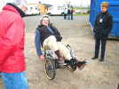
Jean-Claude Veillerobe (notez là-aussi l'orthographe sans i après le V) vient nous faire une démo du "vélo couché" sur lequel il a travaillé tout l'hiver.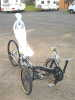
C'est un vélo à 3 roues, dont 2 à l'avant, commandées par câble en levant ou baissant les poignées latérales.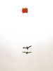
Le ciel est plutôt gris et même pire, mais il y a encore un peu de vent. Je peux monter mes deux grues pour les mettre au point. L'une a plus d'angle que l'autre, c'est exprès !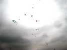
Du gris clair au gris foncé, les cerfs-volants se lancent quand même généreusement. Tout là-haut est le delta de Michel.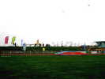
Sur le merlon qui sépare les terrains, les Jardins du V..t se sont installés. Les éoliennes de Mark tournent bien !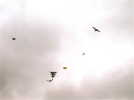
Vent de Folie est arrivé de Vierzon avec toute une panoplie cervolistique. Tant qu'il y a du vent et qu'il ne pleut pas, profitons-en ! Sylvien Venet est aussi là avec... un Jessica, évidemment.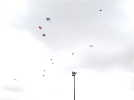
Le ciel s'éclaircit un peu, mais ce n'est pas encore ça. Nous sommes déçus, après une semaine de grand beau temps !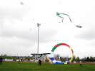
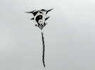
Jacques a produit comme d'habitude un "ANA" (comme Anaelle). Celui-ci se nomme Anaforme...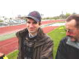
Christophe se lance dans la pub pour Kapita/09. Si vous ne le savez pas, KAP= Kite Aerial Photography. I= International, et TA pour TAhiti, où doit avoir lieu la réunion mondiale 2009 de la discipline, il y a là-bas un fan qui dispose de quelques facilités...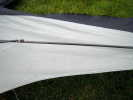
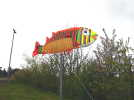
Fernando a monté sur pied un gros poisson très rigide et coloré...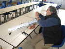
On rentre à l'abri. Jean-Claude peaufine sa navette en forme de... Navette ! Elle est dotée de petites soutes qui s'ouvrent en butée haute pour larguer non des satellites, mais... des bonbons et autres.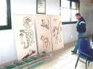
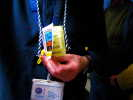
Il a encore réalisé des badges complexes : D'abord, ils ont 2 points d'attache pour toujours rester à l'endroit, ce qui est rare. Ensuite, l'attache de droite se replie et le badge s'ouvre, révélant... les tickets de restauration !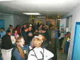
Le vent ayant été très faiblard cet après-midi, on accueille volontiers le pot traditionnel !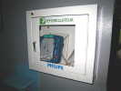
Tout est prévu, boissons, cahuètes, chouquettes délicieuses, et même... le défibrillateur.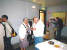
Je continue le tour de table. Madeleine et Michel Renouis, les infatigables de Charente-Poitou, n'ont pas manqué Coulaines...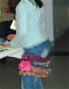
Je connaissais les jupes courtes, ou bas sur les reins, mais la mode des jeunes réserve toujours des surprises !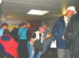
Bernadette se laisse aller à attirer Mark de force sur ses genoux !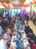
Enfin, les tables sont ouvertes et révélées, avec une décoration et des chemins de table très complexes !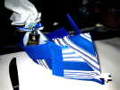
Sur les tables, des serviettes pliées artistiquement et surchargées d'étoiles de mer, d'hippocampes, et porteuse d'un sac d'oeufs de Pâques... Quel effort !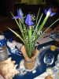
Il y a même des fleurs et des coquillages sur cette mer centrale qui court d'un bout à l'autre...Finalement, l'ensemble fait une très belle salle où l'on a plaisir à être ensemble...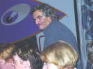
Le maître de maison fait la tournée des popotes pour parler à chacun !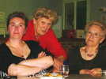
Les dames ont enfin un moment un peu calme pour discuter. C'est Josette, au centre, qui manigance toutes ces richesses !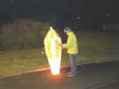
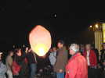
Celui-ci, plus rebondi, va sûrement mieux voler...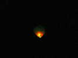
Et voilà, il est parti. Il en volera bien 4 ou 5, dont 1 ou 2 brûleront malheureusement à quelques mètres, chahutés par les turbulences des basses couches. D'autres seront vus très longtemps, avec ce vent faible, on ne les perd pas à l'horizon !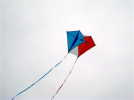
Dimanche matin, très petit vent ! On voit quelques cerfs-volants tirés par leur propriétaire, mais peu restent vraiment en l'air. Ce double Eddy est assez particulier !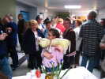
Encore un pot à 11h30, vu le vent, on ne va pas pleurer ! Discours du maire, etc... Emmanuel a amené son Chat-Farin... qui a serré la main dudit ministre à Berck !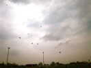
Dimanche après-midi, les cervolistes s'efforceront encore de voler un peu, mais souvent à basse altitude avec beaucoup d'efforts. J'ai sorti ma raie Manta, tout là-haut à gauche !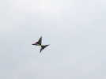
Plusieurs Papillons (conception Ferment) ont bien tiré leur épingle du jeu dans ces conditions limites : en les manipulant comme des combattants, le cervoliste arrive à les garder en l'air pratiquement sans vent, et en évolutions très amusantes !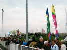
Malgré des conditions météo pas très agréables, le public était venu, peut-être pas aussi nombreux que souhaité, mais là quand même. Entre les jardins du vent, les jeux de billes de Joël, les boutiques et les cerfs-volants qui volaient malgré tout, il pouvait passer cependant un bon après-midi.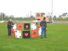
Philippe a sorti son jeu de cartes, son "circo-rigide", comme dit André Cassagnes (ce n'est pas une roue, contrairement aux commentaires, la position est perpendiculaire à la leur)... Mais il a seulement pu faire quelques traversées de terrain en montant à quelques mètres.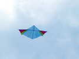
Sylvien, lui, a pu faire voler longtemps son Jessica "augmenté", aux ailes hypertrophiées et plus porteuses ! La structure est un peu différente, mais l'ensemble reste léger et stable...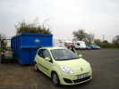
Mais beaucoup de cervolistes qui avaient de la route à faire ont plié bagage assez tôt, comme Gaby et Josette qui étaient venus cette fois en Twingo toute neuve, laissant le camping-car à la maison !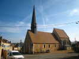
Je dors au fond du stade et lundi matin, je reprends tranquillement la route. Arrêt devant une charmante petite église romane au sud de Nogent-Le-Rotrou. Des toits très pentus, un clocher élancé, des assises solides, un bel équilibre...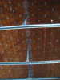
C'est ouvert, à l'intérieur une voute en bois couvre la nef. Elle est décorée de motifs ornementaux peints du plus bel effet...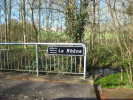